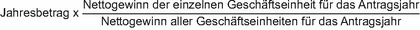

(1) Auf Antrag der berichtspflichtigen Geschäftseinheit kann der Nettogewinn aus der Veräußerung von unbeweglichem Vermögen des Geschäftsjahrs und der vier vorangegangenen Geschäftsjahre (Fünfjahreszeitraum) für alle in demselben Steuerhoheitsgebiet belegenen Geschäftseinheiten einheitlich jährlich nach Absatz 2 verteilt und der effektive Steuersatz nach § 57 Absatz 1 neu berechnet werden. Nettogewinn im Sinne dieses Paragraphen ist der positive Saldo der Gewinne und Verluste aus der Veräußerung von in demselben Steuerhoheitsgebiet belegenem unbeweglichem Vermögen aller dort belegenen Geschäftseinheiten für das Geschäftsjahr. Die Sätze 1 und 2 gelten nicht für Veräußerungsvorgänge zwischen Geschäftseinheiten innerhalb derselben Unternehmensgruppe.
(2) Der Nettogewinn im Sinne des Absatzes 1 ist, beginnend mit dem ersten Geschäftsjahr des Fünfjahreszeitraums, in dem ein Nettoverlust entstanden ist (Verlustjahr), bis zur Höhe des Nettoverlusts zu verrechnen. Der Nettoverlust entspricht dem negativen Saldo der Gewinne und Verluste aus der Veräußerung von in demselben Steuerhoheitsgebiet belegenem unbeweglichem Vermögen aller dort belegenen Geschäftseinheiten für das Geschäftsjahr.
(3) Verbleibt nach Anwendung des Absatzes 2 ein Restbetrag, ist dieser gleichmäßig über den Fünfjahreszeitraum zu verteilen (Jahresbetrag) und den einzelnen Geschäftseinheiten nach der folgenden Formel zuzuweisen:

(4) War eine Geschäftseinheit, die bei der Ermittlung des Verhältnisses nach Absatz 3 mit einbezogen wurde, in einem vorangegangenen Geschäftsjahr nicht in diesem Steuerhoheitsgebiet belegen, wird der auf diese Geschäftseinheit entfallende Teil gleichmäßig auf andere in demselben Steuerhoheitsgebiet belegene Geschäftseinheiten verteilt.
(5) Erfasste Steuern in Bezug auf Nettogewinne oder Nettoverluste des Antragsjahres sind bei der Berechnung der angepassten erfassten Steuern auszunehmen.